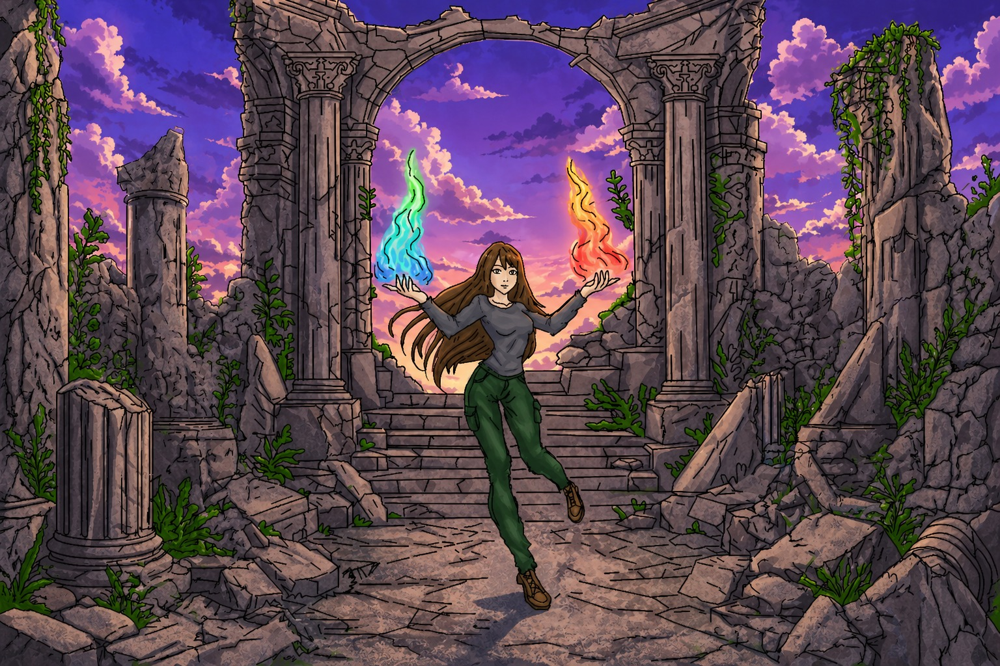
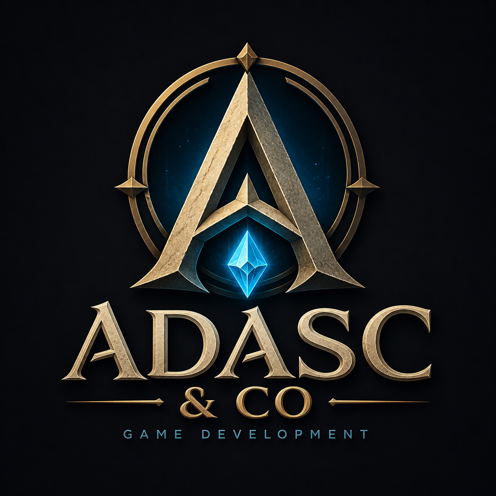

EL LEGADO DE LOS CRISTALES
“Cuatro Cristales. Un linaje roto. Un mundo al borde del colapso.”

El Legado de los Cristales es una aventura narrativa y de acción donde encarnas a Nara, la última heredera de los Guardianes Elementales. Tras la desaparición de su abuelo y el robo de los cuatro cristales sagrados, el mundo comienza a colapsar: mares caóticos, desiertos abrasadores, ciudades flotantes que se desmoronan y bosques consumidos por la corrupción. Tu misión es recuperar cada cristal, restaurar el equilibrio y descubrir la verdad oculta tras el sacrificio de tu familia.
Autoría
Desarrollado por ADASC & CO

ATENCIÓN: Esta página simula la campaña de microfinanciación de un videojuego ficticio y no representa un producto real. Práctica de Multimedia, 1º GDDV - Curso 25/26 (Móstoles/Quintana), URJC. La URJC no se hace responsable del contenido expuesto por el autor.